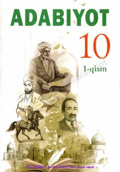

1A10-sinf o'quvchilari uchun adabiyot fanidan o'quv qo'llanma.
Mazkur darslik 10-sinf o'quvchilari uchun mo'ljallangan bo'lib, o'zbek va jahon adabiyoti namunalarini tahlil qilish metodlarini o'rgatadi. Kitobda badiiy asarlarni ijtimoiy-tarixiy kontekstda tushunish, matn tahlili va adabiy jarayonlar haqida nazariy hamda amaliy ma'lumotlar berilgan.